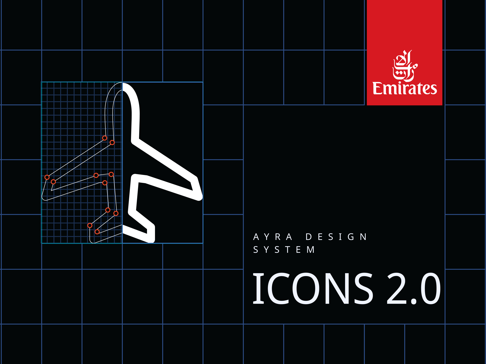
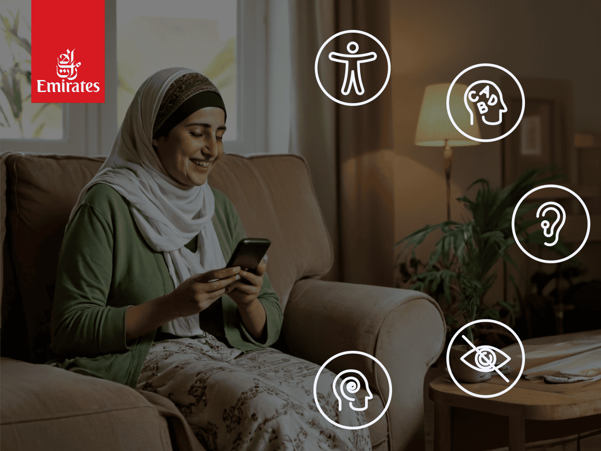
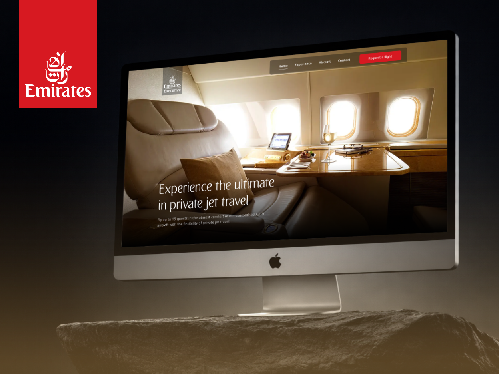
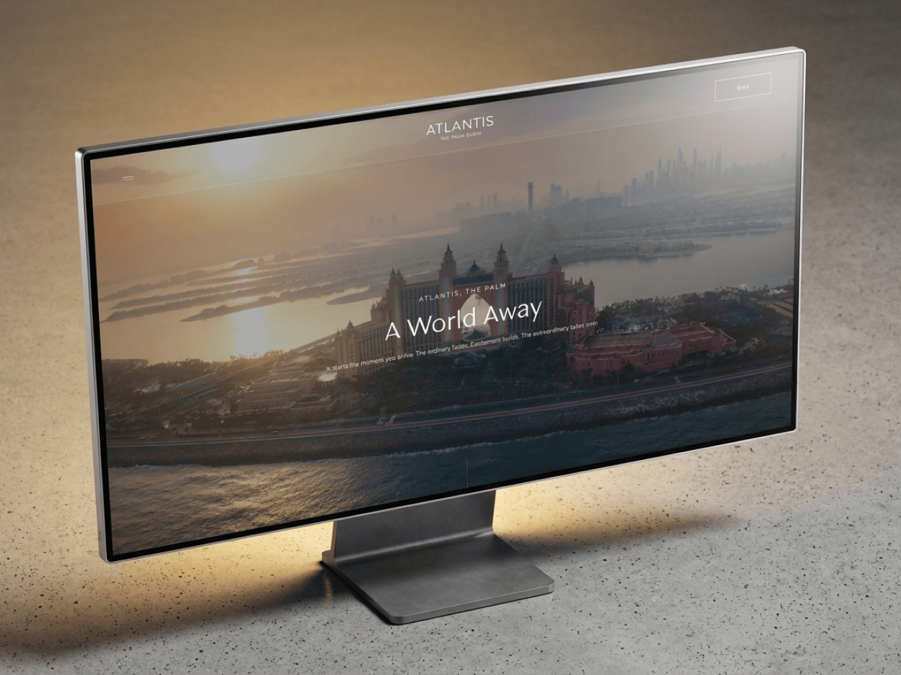

work
My projects so far
Emirates Iconography
Designed a scalable icon family for the Ayra Design System. Established strict foundational rules and grid keylines to unify the visual language across all Emirates digital products.
View Project →
Accessible design toolkit
Engineered a bespoke Figma annotation kit mapping 38 WCAG criteria to design ownership. Shifted accessibility left, reducing QA testing time by 30% and streamlining developer handoff.
View Project →
Emirates Executive Website Redesign
Redesigned the digital experience for Emirates' private jet service, transitioning from single-page to multi-page architecture to better serve ultra-high-net-worth individuals seeking exclusive travel.
View Project →
Kerzner Multi-Brand Design System
One design system. Seven luxury brands.Built a unified component library for Atlantis, One&Only, Bab Al Shams, and Mazagan within a fixed development contract, enabling distinct luxury brand identities through tokenized theming
View Project →